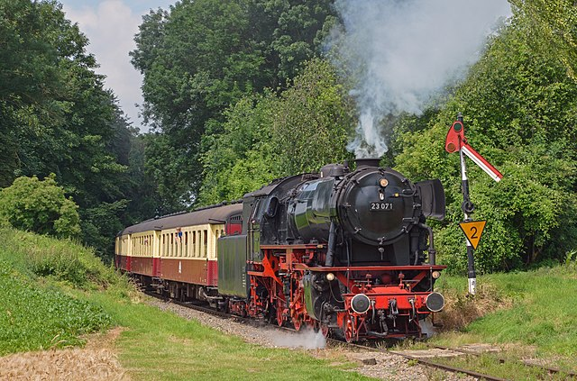
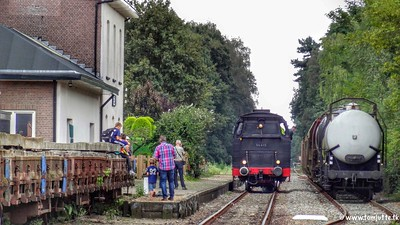

De Veluwsche Stoomtrein Maatschappij
Beschrijving
Galerij
Info
Veluwse stoomtreinen
Rit van stoomlocomotief VSM 64 415 in verband met de intocht van Sinterklaas, gefotografeerd door Patrick van Hattem, 2016

Stoomlocomotief VSM 23 071 tijdens de stoomtreindagen van ZLMS, gefotografeerd door Rob Dammers, 2015

Stoomlocomotief BD 64 415 uit 1936, gefotografeerd bij station Eerbeek door Tom Jutte, 2014
Hoor hem gaan
 Rit van stoomlocomotief VSM 64 415 in verband met de intocht van Sinterklaas, gefotografeerd door Patrick van Hattem, 2016
Rit van stoomlocomotief VSM 64 415 in verband met de intocht van Sinterklaas, gefotografeerd door Patrick van Hattem, 2016